A.1 — Shoot the Pictures
Below are two sets of images with projective transformations between them. I took them by keeping my phone camera fixed while rotating my phone around. I chose overlapping scenes with a lot of detail and still objects so that I could get a lot of correspondences.
Set 1: WeWork
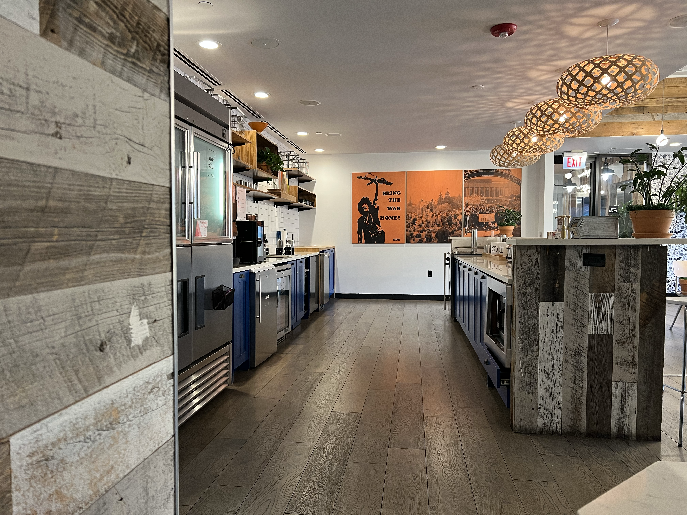
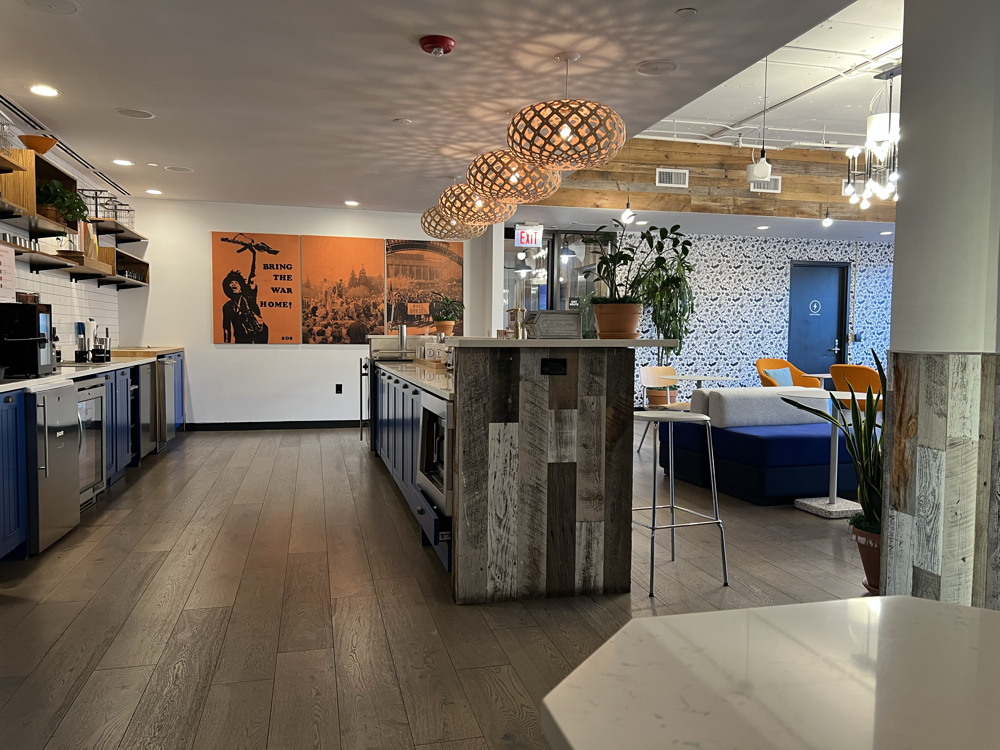
Set 2: Window
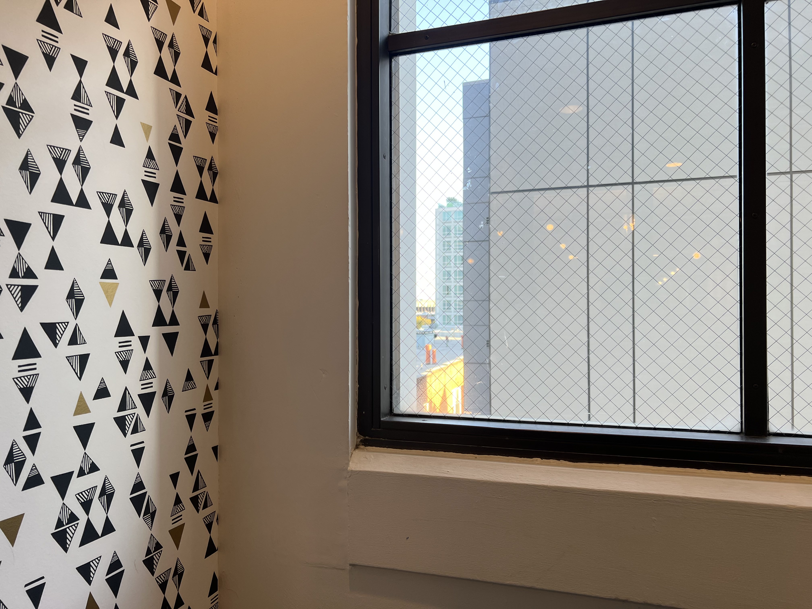
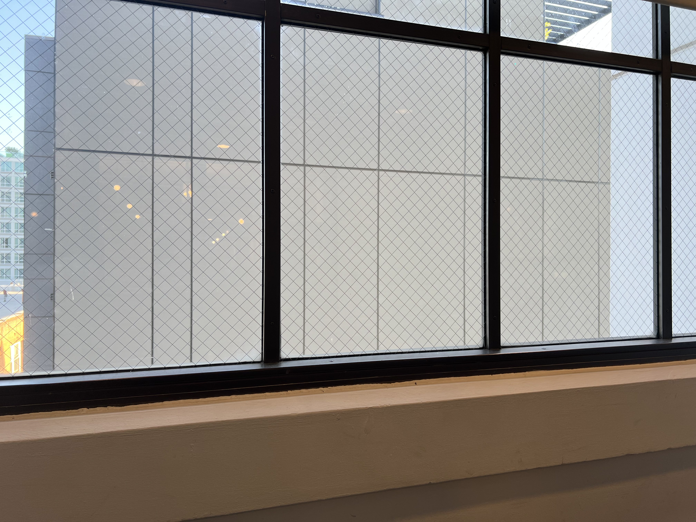
A.2 — Recover Homographies
Linear System Setup
For a pair of projective transformed images, the transformation can be described as a homography p'=Hp where H is a 3x3 matrix with 8 unknowns and p and p' are corresponding points between the two images. We can solve for H by rewriting the definition as Ah=b and solving for h using least squares. Below is an image of the steps required to set up this linear system.
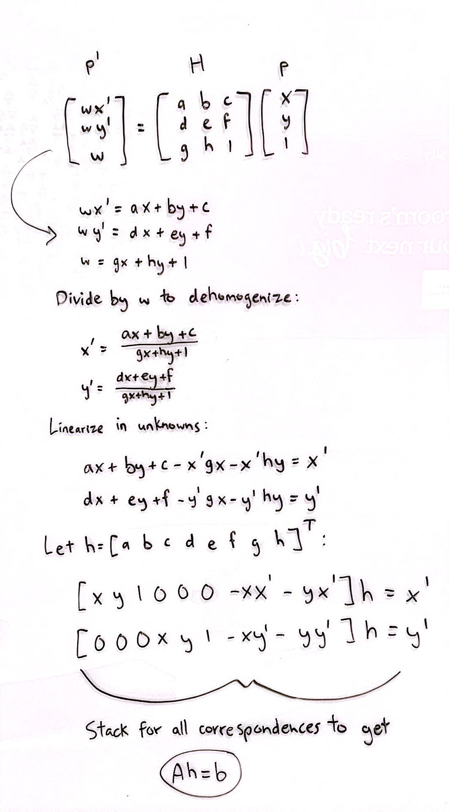
As you can see, each pair of correspondences adds two rows to to the linear system.
Visualized Correspondences and H
Below are visualizations of the sets from part 1 along with their correspondences and the recovered H matrix. I chose to use 20 correspondences.
Set 1: WeWork
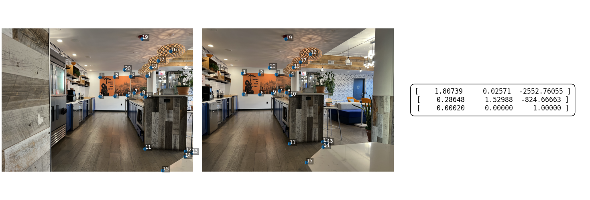
Set 2: Window
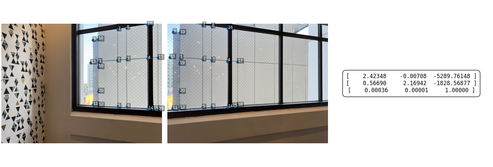
A.3 — Warp the Images
My process for warping is as follows. I start by projecting the image’s four corners through the homography and get a bounding box. This bounding box defines the output canvas along with offsets (dx, dy) to keep all pixel positions nonnegative. I then use inverse warping to map each output pixel back to the source and sample with either nearest neighbor or bilinear (weighted average of four neighbors) while creating an alpha mask for pixels mapped outside the source. For rectification, I select four corners of a rectangular object, artificially define an axis-aligned target rectangle, compute the homography, and warp to create a straight on rectangular view.
I compute the target rectangle by averaging the opposite edge lengths of the selected rectangular object to set width and height (top with bottom, left with right), then place that rectangle axis-aligned from (0, 0) to (target_w−1, target_h−1).
Rectification
Below are some examples of rectification using the process described above for both nearest neighbor and bilinear interpolation.
Abstract Painting
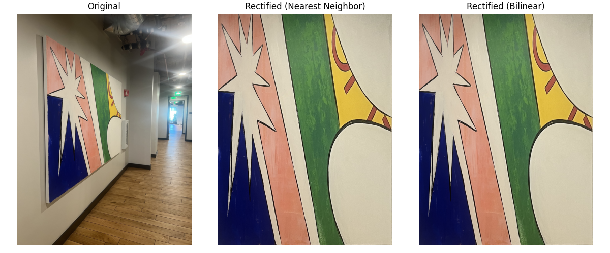
House Painting
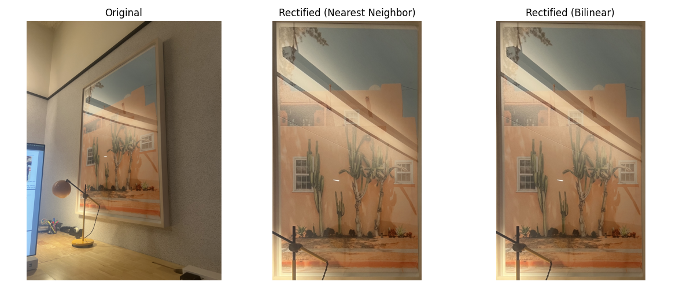
A.4 — Blend the Images into a Mosaic
The process I used to create my mosaics is as follows. I pick 20 correspondences between the first image and the reference (the second image) and solve for the homography from image 1 to image 2. I then build a canvas large enough to hold both warped images by projecting the corners of image 1 with that homography and the corners of image 2 with the identity, and taking the bounding box. For each image, I inverse-warp every canvas pixel back to source coordinates (using the inverse homography for image 1 and the identity for image 2) and sample color with bilinear interpolation, also producing an alpha mask that is 1 where sampling is in bounds and 0 otherwise. I create a feather mask in each source image (weight is strongest at the center and falls to zero at the edges), warp it to the canvas, and multiply by the alpha mask so out-of-bounds pixels do not contribute. Finally, at each canvas pixel I sum the weighted colors from the two images and divide by the summed weights to produce a clean blend with minimal seams. This approach scales to more images by estimating homographies for overlapping pairs, choosing a reference image, composing each image’s transform into that reference frame, warping them all into a common canvas, and applying the same feathered weighted averaging across all contributors.
Mosaic 1
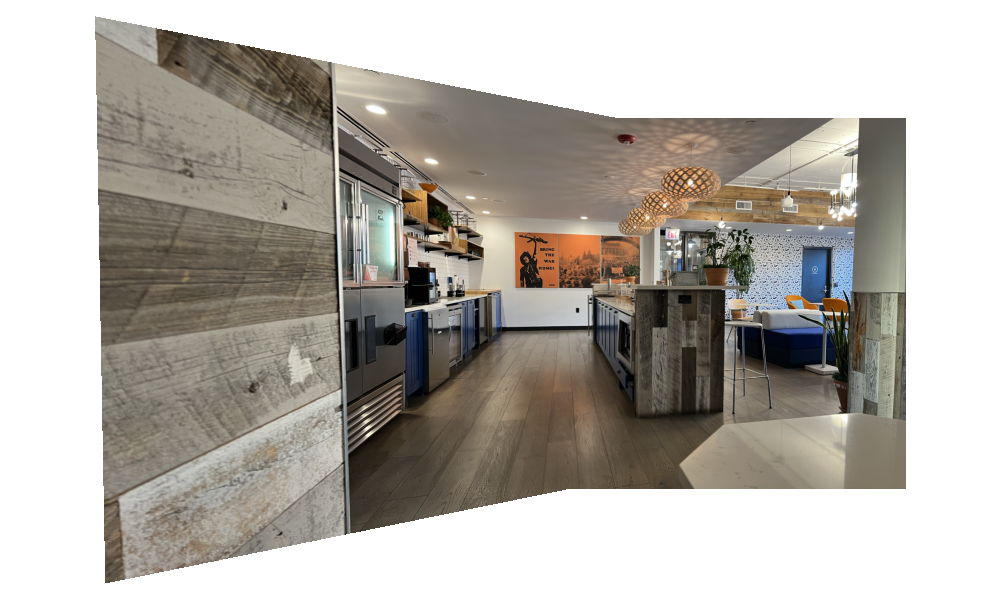
Mosaic 2
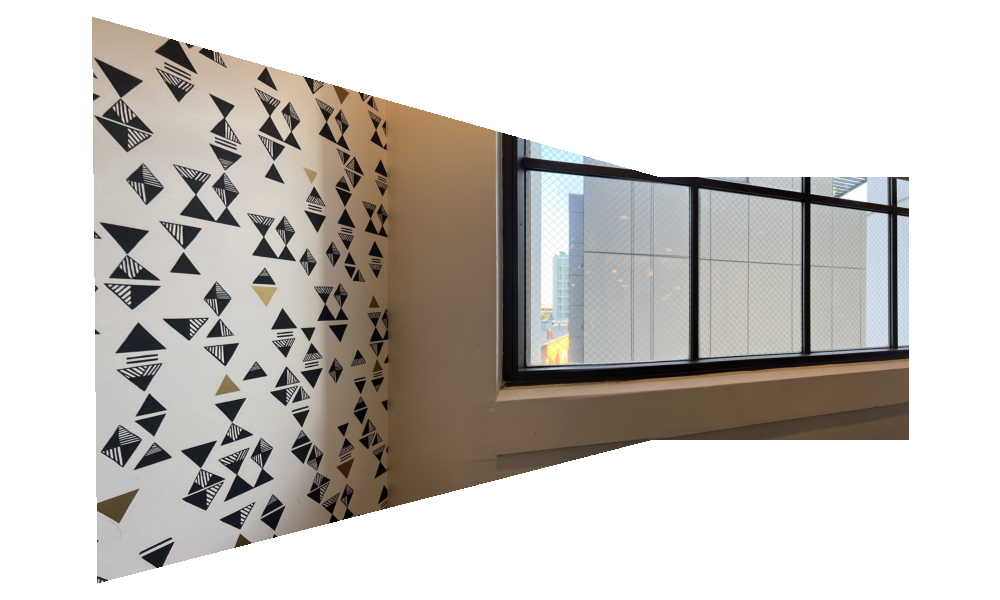
Mosaic 3
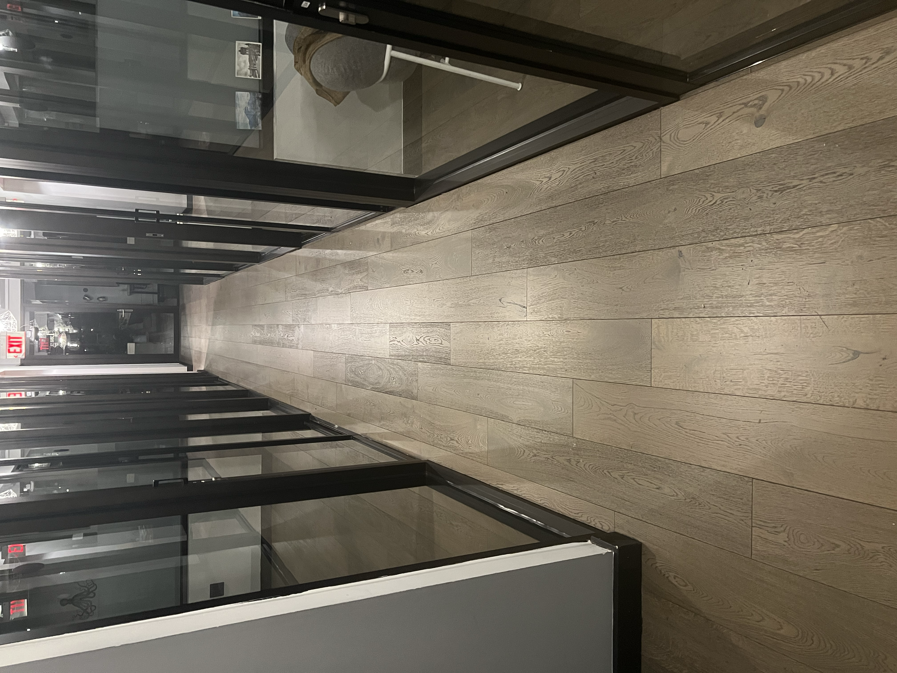
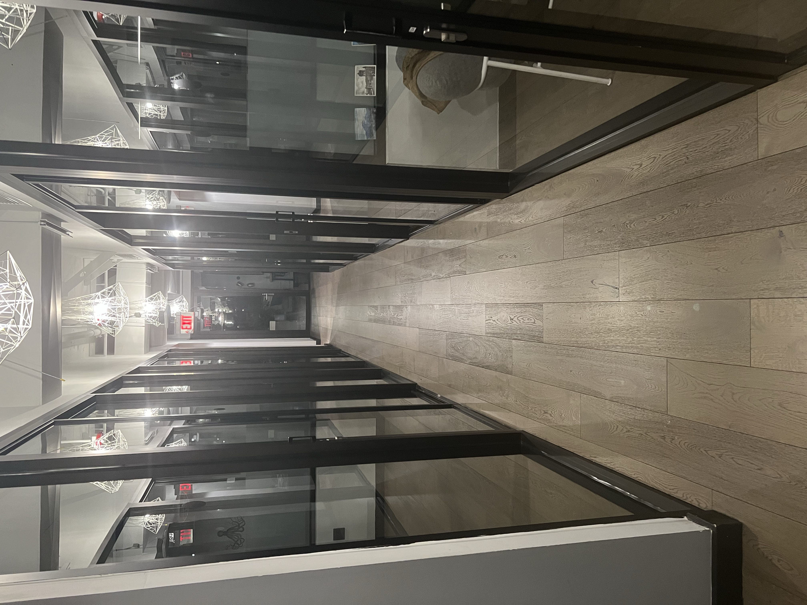
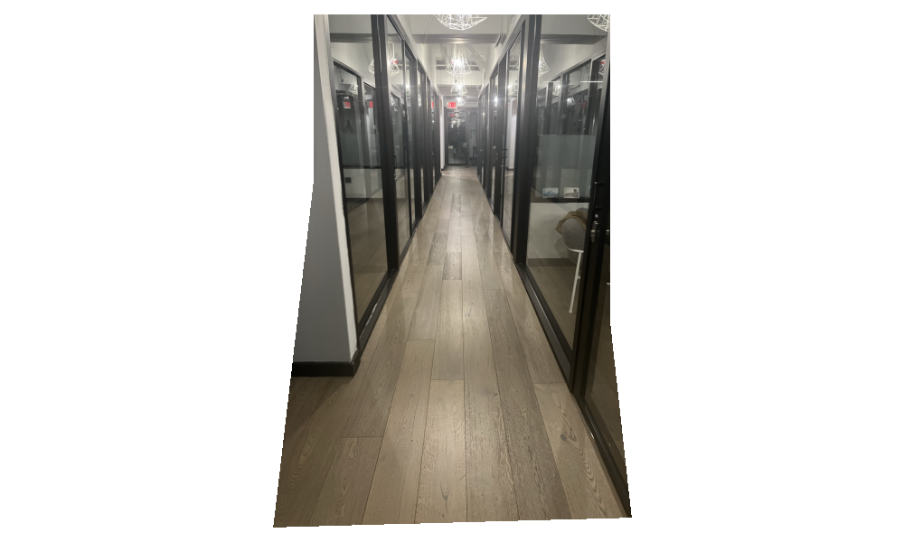